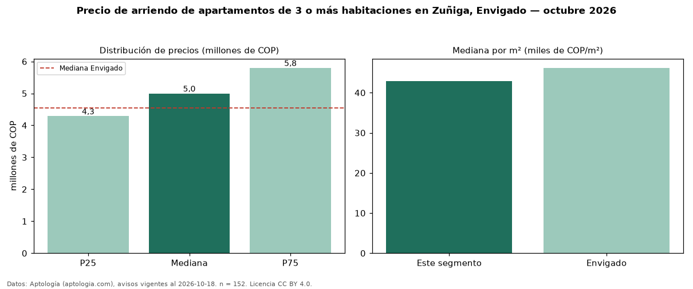

Precio de arriendo de apartamentos de 3 o más habitaciones en Zuñiga, Envigado — octubre 2026
En Zuñiga, Envigado, la mediana de canon mensual de apartamentos de 3 o más habitaciones es COP 5,00 millones, según 152 avisos vigentes. Frente a la mediana de Envigado para apartamentos de 3 o más habitaciones (COP 4,55 millones), queda 10 % por encima. Por metro cuadrado, la mediana es COP 42.945/m² al mes (n = 148 avisos con área), 7 % por debajo de Envigado (COP 46.196/m²). Son 68 % de los 223 avisos de apartamentos en arriendo de la zona, cuya mediana general es COP 4,90 millones (+2 %). Con el precio por m² de venta del mismo segmento (COP 7,38 millones/m²), la rentabilidad bruta implícita es 7,0 % anual (aproximación con medianas de ofertas distintas). El área mediana anunciada es 118 m². El estrato más frecuente es 5 (81 % de los avisos con estrato). La mitad central de los avisos va de COP 4,29 millones a COP 5,80 millones (razón 1,4), una dispersión baja. Datos: Aptología (aptologia.com), CC BY 4.0 — https://www.aptologia.com/arriendo/envigado/zuniga. Archivos: PDF, CSV con las cifras y gráfica PNG.

| Avisos únicos | 152 |
|---|---|
| Percentil 25 | COP 4.287.500 |
| Mediana | COP 5.000.000 |
| Percentil 75 | COP 5.800.000 |
| Mediana por m² | COP 42.944 |
Fuente: avisos vigentes de portales inmobiliarios recopilados por Aptología, deduplicados (mínimo 30 avisos únicos por celda). Precios pedidos, no cerrados. Fecha: 2026-10-18.